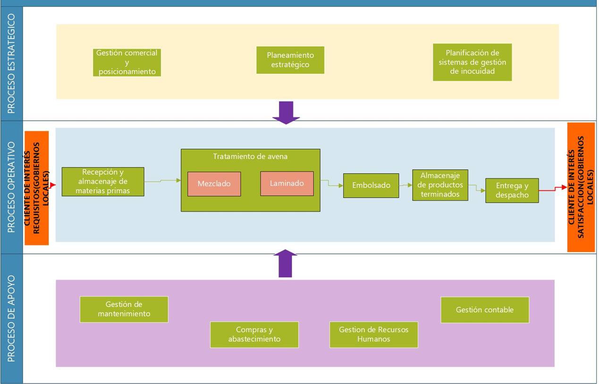

Descripción General
Este sitio web presenta los procedimientos estandarizados de trabajo para cada proceso operativo dentro del sistema productivo. Seleccione un proceso en el menú para visualizar su descripción, flujo de operaciones y estándares visuales.
Mapa de procesos
Resumen de Procesos
| Proceso | Descripción | Documento |
|---|---|---|
| Recepción y Almacenado | Recepción de materia prima, inspección documental, descarga y ubicación ordenada aplicando el sistema FIFO para asegurar trazabilidad. | Ver Procedimiento |
| Tratamiento de Avena | Mezclado, dosificación y laminado del producto para obtener una textura homogénea y calidad nutricional controlada. | Ver Procedimiento |
| Embolsado | Llenado, pesado, sellado y agrupado del producto final garantizando precisión, presentación comercial y trazabilidad por lote. | Ver Procedimiento |